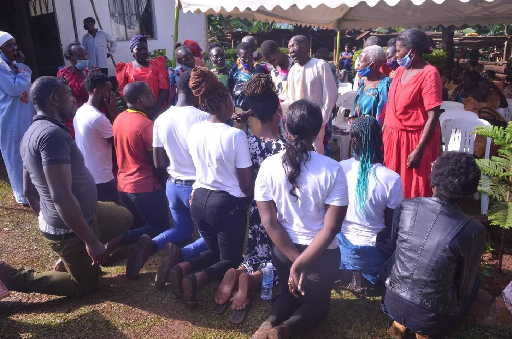
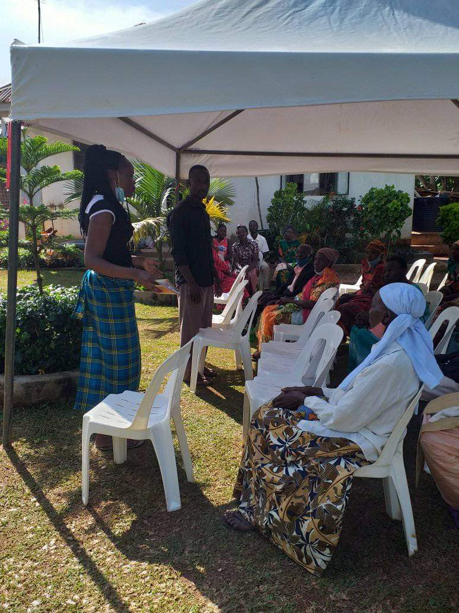
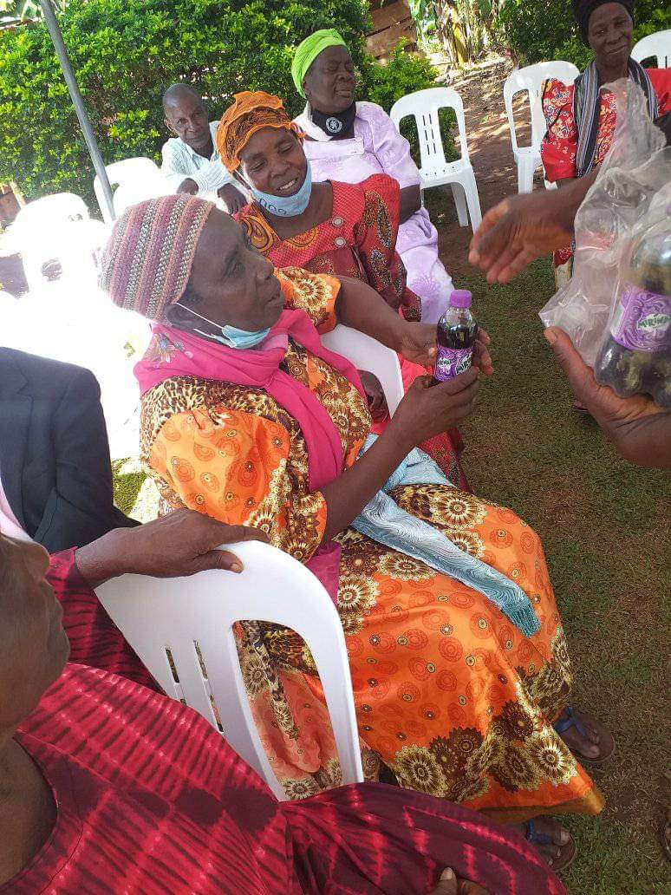
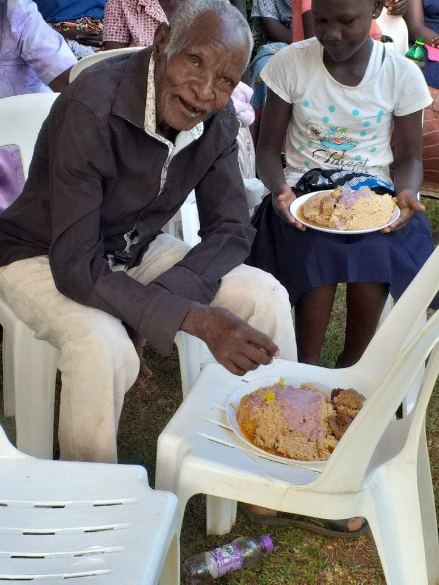
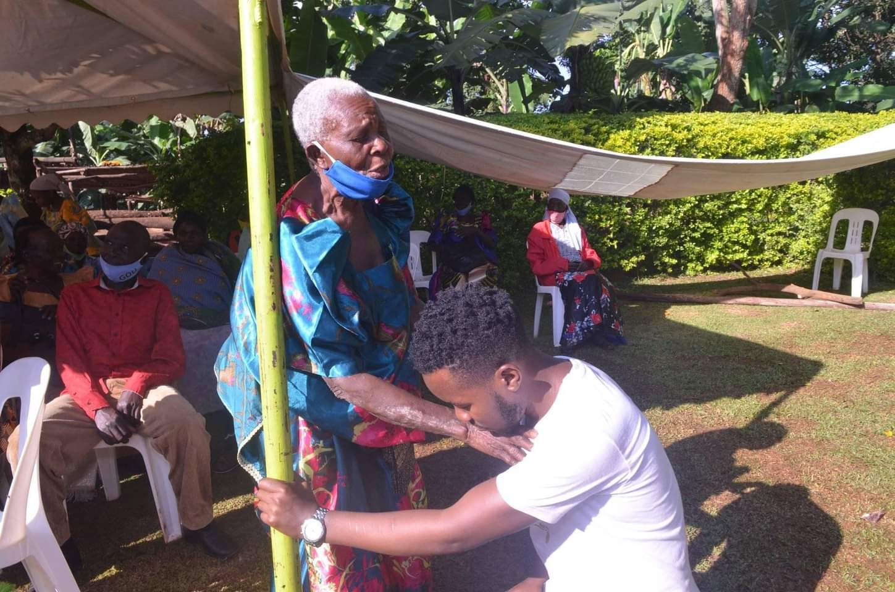
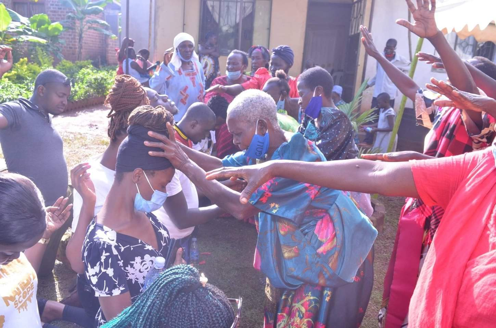

THE AGEING GRACEFULLY FOUNDATION is a Christian faith-based organization founded on Biblical truths and principles. Our major focus is to improve the spiritual and physical well-being of the elderly people in our communities.
A Uganda where elderly people are empowered to lead independent, dignified, and fulfilling lives, fully integrated into active communities.
To transform the livelihoods of the elderly in Uganda by providing essential relief, comprehensive health support, and sustainable economic empowerment through practical skills training, fostering self-resilience and social inclusion.

Every step we walk together is a step toward a more compassionate Uganda for our elders.
Join UsA moving story of a 79-year-old elder's journey from isolation to compassionate care and community belonging — made possible by your support.
Read Full StoryAt every step, we are together especially when they need us the most.

Preaching and teaching the gospel of Jesus Christ, nurturing the spiritual well-being and inner peace of our elders.
Know More →
Providing vital supplies including food, clothing, and comprehensive health and medical support to vulnerable elders.
Know More →
Equipping elders with practical vocational skills tailoring, mat & basket weaving, and beading to stay active, productive, and self-sufficient.
Know More →
Organizing symposiums, conferences, and seminars that close the gap between elders, youth, families, and institutions.
Know More →We are committed to providing a safe, comfortable, and decent elderly home environment accommodating vulnerable elders who lack supporting family structures, ensuring no one is left behind.
Partner With Us
This is the impact YOU helped us make in 2025-26
Your contribution directly funds relief kits, vocational training, and dignified care for Uganda's elderly. Every shilling counts.
Pay using our Mobile Money
MTN / Airtel Scan & Donate
Secure card payment powered by our payment gateway.
🔒 100% secure. All donations go directly to elder care.